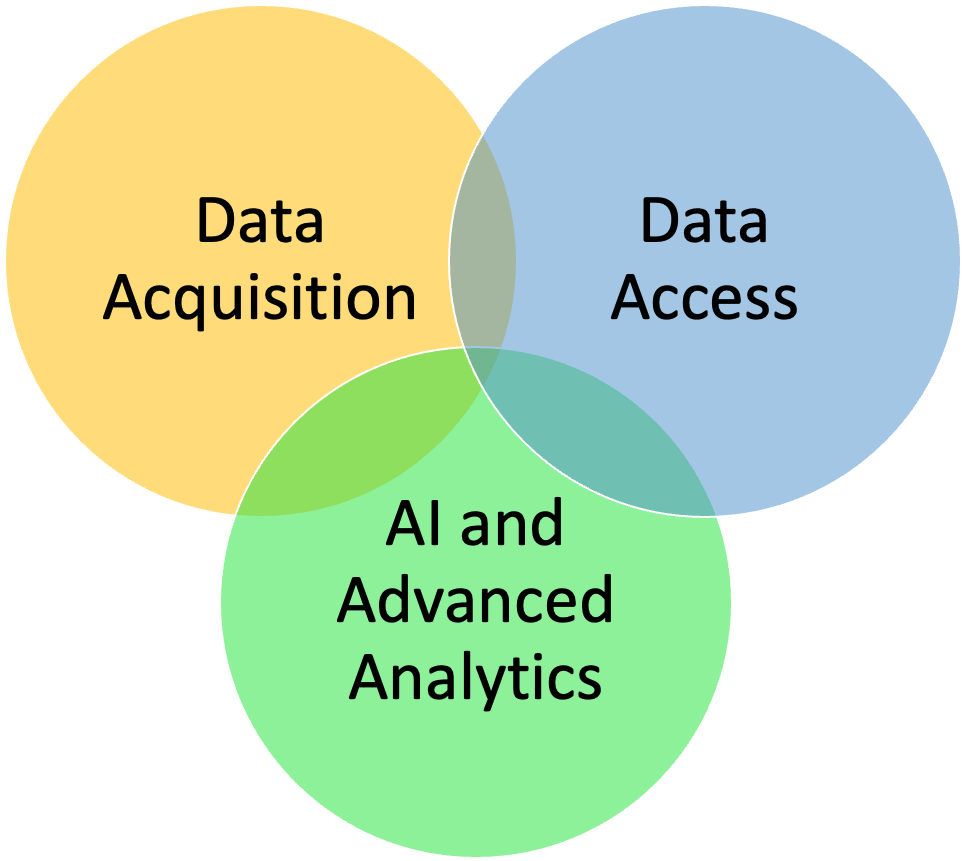
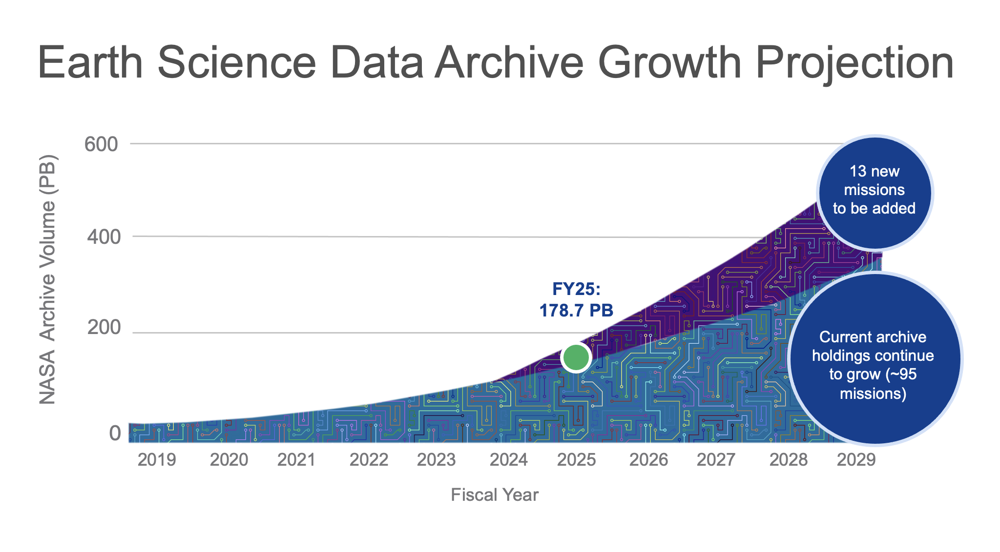
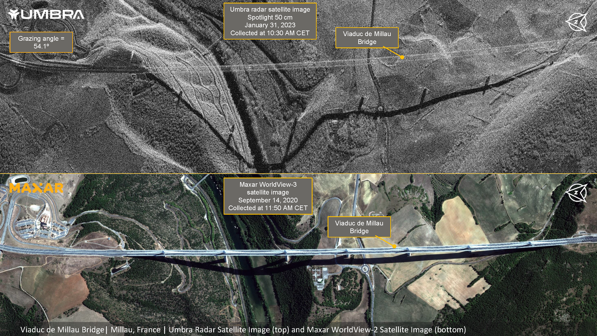
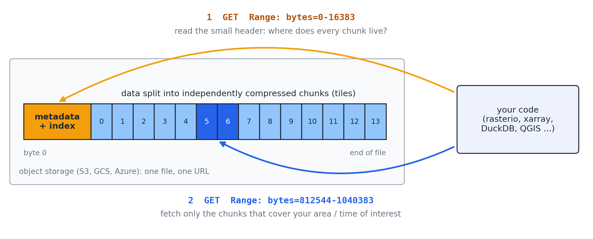
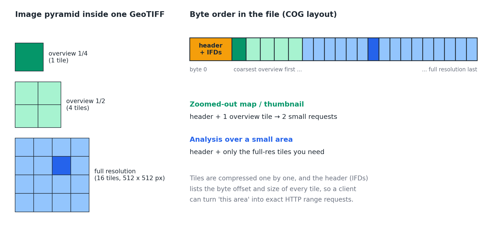
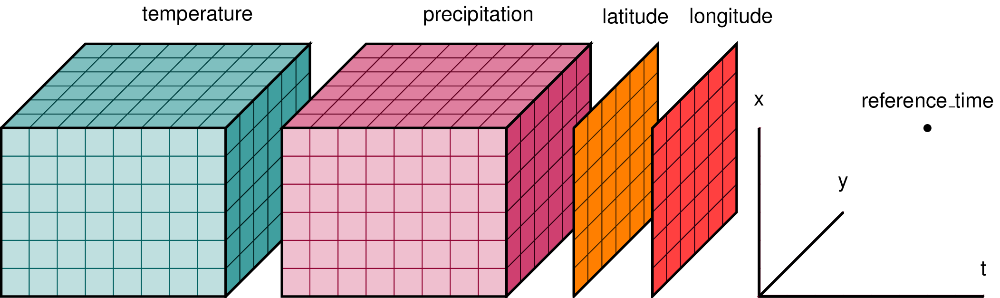
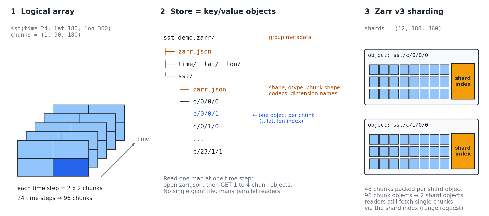
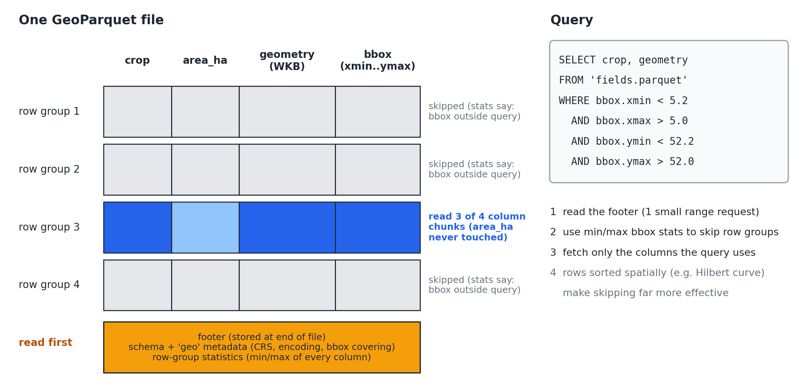
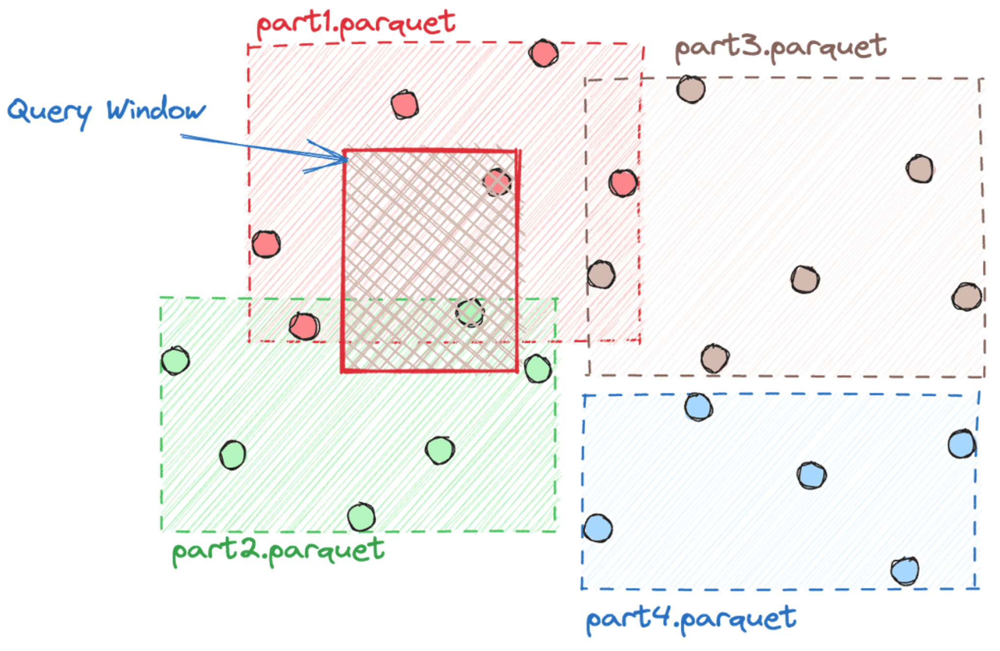

10. The Landscape of Geospatial Data and Tools#
This section provides an overview of the geospatial analytics landscape, including datasets, data formats, platforms, cloud repositories and Python packages. The goal of this introductory section is to familiarize you with the rapidly evolving landscape for geospatial analytics.
10.1. Background#
The geospatial sector has been evolving rapidly in recent years. We can summarize the drivers of these changes in three categories:


Fig. 10.1 Drivers of change in geospatial technology.#
Data Acquisition:
Earth Observation (EO) satellites were historically launched and operated by government agencies such as NASA, USGS, ESA, JAXA, ISRO, and others. While a few commercial companies started operating EO satellites in the early 2000s, their scope was still very limited. In the last decade, however, advances in smallsat and cubesat technologies have allowed a large number of commercial companies to enter the market and launch new satellite constellations. This boom in commercial EO includes satellites that do not carry multispectral sensors, and instead carry synthetic aperture radar (SAR), light detection and ranging (Lidar), or hyperspectral sensors.
Fig. 10.2 shows the growing archive of NASA satellite mission data as an example, and Fig. 10.3 shows collocated SAR and optical imagery.

Fig. 10.2 Growing archive of NASA satellite mission data [source NASA Earth Data]#

Fig. 10.3 Collocated SAR and optical imagery provided by Umbra and Maxar. [source: Umbra]#
Data Access
These new modes of data acquisition have resulted in new and innovative ways of storing, sharing and accessing the data. The traditional approach of downloading all your imagery to your local machine (desktop or server) and running the analysis there does not scale anymore. It is more efficient, and in some cases the only possible solution, to bring the computation next to where the data is stored. Advances in cloud technology have been a major help in changing how we access geospatial data.
This new mode of access also requires new data formats that are “cloud-native”, and better ways of cataloging the data so users can query and find what they need. Read more about cloud-native geospatial data in the CNG Guide. You can also follow the Cloud-Native Geospatial Forum (CNG) to stay up to date with developments in this community.
Finally, these changes are accompanied by new APIs and data catalog standards that make it easier to query and access the data.
AI and Advanced Analytics
AI is changing how we consume data and what insights we can derive from it, and geospatial data is no exception. Numerous applications are either enhanced or entirely enabled by AI. Here is a non-exhaustive list of such applications:
Mapping non-forest trees in the West African Sahara (link)
Mapping schools from space (link)
Mapping land use and land cover (link)
Mapping unmapped population (link)
Mapping Africa’s croplands (link)
These advancements require a new set of tools and pipelines for processing geospatial data, and they have been one of the main drivers of change in the geospatial Python landscape.


In the following sections, we will learn more about the geospatial technology landscape, and in particular the data formats and Python packages that make it possible to use and manipulate geospatial data.
10.2. Cloud-Native Data Formats#
Geospatial data is broadly categorized as vectors and rasters. With the changes described in the previous section, the file formats used to store and access these data have evolved too. Consider a similar example: back in the day you would buy or rent a DVD, CD or even a cassette to watch a movie on your TV at home. Nowadays, you simply log into a website or app and “stream” the same content (often with higher image quality). Geospatial data is going through a similar change. You don’t want to download all the satellite images for your application; rather, you want to access them where they are stored and load only the portions of the data you need for your analysis.
In this section we first look at what makes a format “cloud-optimized”, then review the landscape of formats, and finally take a closer look at the three formats you will use most often in this course: Cloud Optimized GeoTIFF (COG), Zarr and GeoParquet.
10.2.1. What makes a format cloud-optimized?#
Large public geospatial datasets are increasingly stored on cloud object storage such as Amazon S3, Google Cloud Storage or Azure Blob Storage. Object storage is cheap and effectively unlimited, and each file (an object) is reached through a URL. It also supports a simple but powerful feature of the HTTP protocol: the range request. Instead of asking the server for the whole file, a client can ask for a specific range of bytes, for example Range: bytes=0-16383.
A format is cloud-optimized when its internal organization lets a client get what it needs with a few small range requests. In practice this comes down to three ingredients:
Chunking (tiling): The data is split into chunks (tiles for images, chunks for arrays, row groups for tables) and each chunk is compressed independently, so it can be read and decompressed on its own.
Metadata and an index that are cheap to find: A small header (or footer) describes the dataset and records exactly where each chunk lives in the file. The client reads this first, then knows which bytes to fetch.
Access over HTTP range requests on object storage: The client fetches only the chunks that cover its area, time period or columns of interest, often many of them in parallel.
Many cloud-optimized formats add a fourth, optional ingredient: overviews (also called multiscales or pyramids), which are lower-resolution copies of the data used for fast visualization.


Fig. 10.4 Anatomy of a cloud-optimized file. The client first reads the small metadata/index block, then requests only the chunks it needs using HTTP range requests.#
You can see a range request in action with a single line of curl or Python. The example below requests only the first 1,024 bytes of a large COG hosted on S3 (this is the same OpenAerialMap image we use in the class demo). The server answers with status code 206 Partial Content instead of 200 OK:
curl -s -r 0-1023 -o first_kb.bin -w "%{http_code} %{size_download}\n" \
https://oin-hotosm-temp.s3.us-east-1.amazonaws.com/6ab2355ff8028de22430be88/0/6ab2355ff8028de22430be89.tif
import requests
url = "https://oin-hotosm-temp.s3.us-east-1.amazonaws.com/6ab2355ff8028de22430be88/0/6ab2355ff8028de22430be89.tif"
r = requests.get(url, headers={"Range": "bytes=0-1023"})
print(r.status_code) # 206 -> Partial Content
print(len(r.content)) # 1024 bytes, not the whole file
print(r.content[:4]) # b'II*\x00' -> the TIFF "magic number"
Note
You will see both terms “cloud-native” and “cloud-optimized”. Cloud-native usually describes the whole approach (data stays in the cloud, computation moves to the data), while cloud-optimized describes a file format that supports this approach efficiently. A plain GeoTIFF on S3 is in the cloud, but it is not cloud-optimized.
10.2.2. The format landscape#
Fig. 10.5 shows traditional and cloud-optimized formats for various data types, and the table below summarizes the landscape as of 2026. We will cover the three formats in bold in detail. The rest are good to know about, and you will likely come across them in your projects.

Fig. 10.5 Cloud optimized geospatial formats. [source: CNG Guide]#
Data type |
Traditional formats |
Cloud-optimized formats |
In one line |
|---|---|---|---|
Rasters (images) |
GeoTIFF, JPEG2000 |
Cloud Optimized GeoTIFF (COG) |
A GeoTIFF with internal tiles and overviews, readable with range requests. |
Multidimensional arrays / data cubes |
netCDF, HDF5, GRIB2 |
Zarr (v3), GeoZarr |
Chunked N-dimensional arrays stored as many small objects. GeoZarr adds geospatial conventions (CRS, multiscales). |
netCDF / HDF5 already on the cloud |
Cloud-optimized HDF5/netCDF, Kerchunk, VirtualiZarr, Icechunk |
Make existing archives readable like Zarr without converting them. Icechunk adds version control and transactions. |
|
Vectors (analysis) |
Shapefile, GeoPackage, GeoJSON |
GeoParquet (and native Parquet geometry types) |
Columnar tables with geometry, row-group statistics and spatial metadata. |
Vectors (streaming) |
GeoJSON |
FlatGeobuf |
Binary features with a built-in spatial index, streamed over HTTP. |
Map tiles (visualization) |
Tile servers, MBTiles |
PMTiles |
A whole tile pyramid in a single file on object storage, no tile server needed. |
Point clouds |
LAS, LAZ |
Cloud Optimized Point Cloud (COPC) |
A LAZ file organized as an octree, so you can read one area or one level of detail. |
Catalogs (metadata) |
STAC JSON files |
stac-geoparquet |
A whole STAC catalog as one queryable table. |
10.2.3. Traditional formats: a quick review#
Before looking at the cloud-optimized formats, let’s briefly review the traditional formats you are likely familiar with.
Rasters and arrays
GeoTIFF: A variant of the TIFF (Tag Image File Format) format enriched with geospatial metadata. TIFF itself was originally used mostly by scanners, and it supports lossless compression. In addition to the pixel values, a GeoTIFF stores the georeferencing information (the location of the image on the Earth) and other metadata such as the map projection, coordinate reference system and datum in its header.
JPEG2000: A compressed format for raster data that supports both lossy and lossless compression. For example, ESA distributes Sentinel-2 imagery in JPEG2000, while the copy of Sentinel-2 hosted on AWS (Earth Search) has been converted to COGs.
netCDF and HDF5: netCDF is more than just a data format. According to the Unidata netCDF page: NetCDF (network Common Data Form) is an interface for array-oriented data access and a library that provides an implementation of the interface. The netCDF library also defines a machine-independent format for representing scientific data. Together, the interface, library, and format support the creation, access, and sharing of scientific data. netCDF is widely used for multidimensional data such as climate model outputs (you worked with a netCDF file of sea surface temperature in the Xarray lectures). Modern netCDF (netCDF4) is built on top of HDF5, which is also the format of many NASA satellite products. GRIB2 is the equivalent standard in operational weather forecasting.
Vectors
Shapefile: A popular vector format defined by Esri and supported by almost all geospatial software. A shapefile is in fact a collection of files with the same name and different extensions. Three of them are mandatory: the
.shpfile stores the geometries, the.shxfile is an index into the geometries, and the.dbffile stores the attributes. Most shapefiles also include a.prjfile with the coordinate reference system, and may include others (for example.cpgfor the character encoding). The format also has practical limits: each component file is limited to 2 GB, and attribute names are limited to 10 characters. Because the data and metadata are spread over several files that all have to be read, shapefiles are hard to use on cloud object storage.GeoJSON: A text (JSON) format for encoding a variety of geographic data structures. From its spec: GeoJSON supports the following geometry types:
Point,LineString,Polygon,MultiPoint,MultiLineString, andMultiPolygon. Geometric objects with additional properties areFeatureobjects. Sets of features are contained byFeatureCollectionobjects. GeoJSON is easy to read and great for small datasets and web applications, but it has no index and no compression, so it becomes slow and large for big datasets. Check out this tutorial on creating and using GeoJSON.GeoPackage: An OGC standard based on a SQLite database in a single file. It is a great replacement for shapefiles on your local disk, but it is not designed to be read efficiently over HTTP.
10.2.4. Cloud Optimized GeoTIFF (COG)#
A Cloud Optimized GeoTIFF is, according to its definition, a regular GeoTIFF file, aimed at being hosted on a HTTP file server, with an internal organization that enables more efficient workflows on the cloud. It does this by leveraging the ability of clients issuing HTTP GET range requests to ask for just the parts of a file they need. Because a COG is still a valid GeoTIFF, any software that reads GeoTIFFs can read a COG. COG was adopted as an official OGC standard in 2023.
A COG has three properties that map directly onto the three ingredients above:
Internal tiling: Pixels are stored in square tiles (typically 256 x 256 or 512 x 512 pixels) instead of row by row, so reading a small area means reading a few tiles.
Overviews: The file contains lower-resolution versions of the image (for example 1/2, 1/4, 1/8 of the original resolution), so a zoomed-out map or a thumbnail can be produced by reading only a few small tiles.
Header first: The header and the image file directories (IFDs), which record the byte offset and size of every tile, are placed at the beginning of the file, followed by the overviews (coarsest first) and finally the full-resolution tiles.


Fig. 10.6 Internal organization of a COG: an image pyramid of tiles (left) and the order of bytes in the file (right).#
Reading a COG over the network. rasterio (built on GDAL) can open a COG directly from a URL and read only a window, or a downsampled version that is served from the overviews:
import rasterio
from rasterio.windows import Window
url = "https://oin-hotosm-temp.s3.us-east-1.amazonaws.com/6ab2355ff8028de22430be88/0/6ab2355ff8028de22430be89.tif"
# Recommended GDAL settings for reading COGs over HTTP
with rasterio.Env(GDAL_DISABLE_READDIR_ON_OPEN="EMPTY_DIR"):
with rasterio.open(url) as src:
print(src.profile) # look for tiled=True, blockxsize/blockysize, compress
print(src.overviews(1)) # overview decimation factors, e.g. [2, 4, 8, 16]
# 1) a 512 x 512 window at full resolution: only a few tiles are fetched
tile = src.read(1, window=Window(col_off=0, row_off=0, width=512, height=512))
# 2) the whole image at 1/16 resolution: GDAL reads from an overview
thumb = src.read(1, out_shape=(src.height // 16, src.width // 16))
Creating and validating a COG. You can convert any raster to a COG with GDAL’s COG driver, with the rio-cogeo plugin, or directly from rasterio:
# GDAL
gdal_translate -of COG -co COMPRESS=DEFLATE input.tif output_cog.tif
# rio-cogeo: create and validate
rio cogeo create input.tif output_cog.tif
rio cogeo validate output_cog.tif
# rasterio: write with the COG driver
profile.update(driver="COG", compress="deflate", blocksize=512)
with rasterio.open("output_cog.tif", "w", **profile) as dst:
dst.write(data)
Where you will meet COGs. Sentinel-2 L2A on AWS (Earth Search), Landsat Collection 2 from USGS, OpenAerialMap and many other datasets on Microsoft Planetary Computer are distributed as COGs. We will search and load them with STAC in the next lectures.
Limitation. A COG stores a single 2D image (with one or more bands). A time series is therefore stored as many separate COG files, and we need a catalog (STAC) to find them and a tool to stack them into a data cube. For data that is naturally multidimensional, such as climate model output with time, height and many variables, Zarr is a better fit.
10.2.5. Zarr#
Zarr is a format for the storage of chunked, compressed, N-dimensional arrays, inspired by HDF5 and netCDF. From the Zarr specification: The primary motivation for the development of Zarr is to address this challenge by enabling the storage of large multidimensional arrays in a way that is compatible with parallel and/or distributed computing applications. Zarr maps naturally onto Xarray’s data model: an Xarray Dataset is stored as a Zarr group, and each variable is stored as a Zarr array.


Fig. 10.7 Zarr data format used for storing n-dimensional arrays. An n-dimensional array is a great data model for dynamic phenomena. [source: Working with Climate Data]#
The key difference from COG (and from netCDF/HDF5) is that a Zarr dataset is not a single file. It is a store of many small objects, identified by keys:
Metadata: A small JSON document (
zarr.jsonin Zarr version 3) for the group and for each array. The array metadata records the shape, data type, chunk shape, compression codecs and dimension names.Chunks: Every chunk of every array is a separate object, named by its position in the chunk grid (for example
sst/c/0/0/1is the chunk at time index 0, latitude index 0, longitude index 1).
This layout works very well with object storage: there is no single big file to coordinate, and many workers (for example Dask workers, which we will cover later) can read and write different chunks in parallel.


Fig. 10.8 A Zarr v3 array: the logical array and its chunks (left), how it is laid out as key/value objects in a store (middle), and sharding, which packs many chunks into a single object with an index (right).#
Zarr version 3. The Zarr v3 specification was finalized in 2023, and zarr-python 3.0 was released in January 2025. Two changes are worth knowing:
All metadata for a group or an array lives in a single
zarr.jsondocument (Zarr v2 used.zarray,.zgroupand.zattrs).Sharding: When chunks are small, a dataset can have millions of objects, which is slow to list and manage. Sharding packs many chunks into one object (a shard) with an index at the end, so readers can still fetch individual chunks with range requests.
Try it yourself. Write a small Xarray dataset to Zarr and look inside the store:
from pathlib import Path
import numpy as np
import pandas as pd
import xarray as xr
time = pd.date_range("2020-01-01", periods=24, freq="MS")
lat = np.linspace(-89.5, 89.5, 180)
lon = np.linspace(-179.5, 179.5, 360)
ds = xr.Dataset(
{"sst": (("time", "lat", "lon"), np.random.rand(24, 180, 360).astype("float32"))},
coords={"time": time, "lat": lat, "lon": lon},
)
# one chunk = one time step x half of the globe in each direction
ds.to_zarr("sst_demo.zarr", zarr_format=3, mode="w", consolidated=False,
encoding={"sst": {"chunks": (1, 90, 180)}})
def describe_store(path, var="sst"):
store = Path(path)
print("metadata documents:", sorted(str(p.relative_to(store)) for p in store.rglob("zarr.json")))
objects = sorted(p for p in (store / var / "c").rglob("*") if p.is_file())
print(len(objects), "data objects for", var, "e.g.", objects[0].relative_to(store))
describe_store("sst_demo.zarr")
Open sst_demo.zarr/sst/zarr.json in JupyterLab and find the shape, chunk_grid and codecs entries. Can you explain why 96 objects were written for sst? Now rewrite the dataset with sharding and count the objects again:
ds.to_zarr("sst_sharded.zarr", zarr_format=3, mode="w", consolidated=False,
encoding={"sst": {"chunks": (1, 90, 180), "shards": (12, 180, 360)}})
describe_store("sst_sharded.zarr")
Chunking decides what is fast. The chunk shape is chosen when the data is written, and it determines which questions are cheap to answer. For example, Google’s analysis-ready ERA5 reanalysis on Google Cloud (hourly, global, with hundreds of variables) is stored with one time step per chunk:
import xarray as xr
ds = xr.open_zarr(
"gs://gcp-public-data-arco-era5/ar/full_37-1h-0p25deg-chunk-1.zarr-v3",
chunks=None,
storage_options=dict(token="anon"), # public data, no credentials needed (requires gcsfs)
)
print(ds) # opening only reads metadata: no data has been downloaded yet
t2m = ds["2m_temperature"].sel(time="2020-07-01T12:00") # one global map
t2m.plot() # reads a single chunk (a few MB)
Reading one global map is fast because it is a single chunk. Reading a 40-year time series at a single location, on the other hand, touches one chunk for every hour, i.e. hundreds of thousands of chunks. That is why some datasets are published twice, once chunked for maps and once chunked for time series.
GeoZarr. Zarr itself is a generic format and does not know about coordinate reference systems. GeoZarr is a set of conventions, being developed as an OGC standard, that describes how to store CRS information, georeferencing and multiscale pyramids (overviews) in Zarr. A prominent example is ESA, which is moving Sentinel products to Zarr through its Earth Observation Processing Framework (EOPF).
Note
Petabytes of data already exist as netCDF and HDF5 files on the cloud. Tools such as Kerchunk and VirtualiZarr create a small “reference” layer that lets you read these files as if they were Zarr, without converting them, and Icechunk adds version control (like git) and safe concurrent writes on top of Zarr. See the format table above for pointers.
10.2.6. GeoParquet#
Apache Parquet is a columnar file format for tabular data that is used everywhere in data science and data engineering. GeoParquet builds on Parquet by adding interoperable geospatial types (points, lines, polygons) and the metadata needed to interpret them. It has become the cloud-optimized format of choice for large vector datasets.
A Parquet file has three properties that make it cloud-optimized:
Columnar storage: Values of each column are stored together and compressed, so a query that uses 2 of 50 columns only reads those 2 columns.
Row groups: Rows are split into groups (for example 100,000 rows each). Each row group is a chunk that can be read independently.
Footer with statistics: The footer, stored at the end of the file, contains the schema and the minimum and maximum value of every column in every row group. A reader can skip row groups whose statistics show they cannot match the query.
GeoParquet adds a geo metadata entry to the footer that records which column holds the geometry, its encoding (Well-Known Binary, WKB, or native GeoArrow encodings), and its coordinate reference system. Since GeoParquet 1.1 (2024), a file can also include a bounding box (“covering”) column with the xmin, ymin, xmax, ymax of every feature. Together with the row-group statistics, this lets a reader skip most of a file for a spatial query. This works best when the rows are sorted spatially (for example along a Hilbert curve), so that nearby features end up in the same row group.


Fig. 10.9 Inside a GeoParquet file: row groups and column chunks, with the footer holding the schema, geo metadata and statistics. A spatial query reads the footer, skips row groups using the bounding box statistics, and fetches only the columns it needs.#


Fig. 10.10 Schematic of a query in GeoParquet. The query window shown as the red rectangle only overlaps with the bounding box of part1.parquet and part2.parquet, so the query engine can safely skip scanning part3.parquet and part4.parquet, reducing the I/O cost and answer the query faster. [source Wherobots blog]#
Native geospatial types in Parquet. In 2025, GEOMETRY and GEOGRAPHY were added as native logical types to the Parquet format itself, including bounding box statistics. This means that engines that are not specifically geospatial (for example Apache Arrow, DuckDB and table formats such as Apache Iceberg) can now understand geometry columns. GeoParquet and the native types are converging, so expect to see both over the next few years. See this post for more details.
Try it yourself. Write a GeoDataFrame to GeoParquet with a bounding box column, inspect the file, and read back a small area:
import json
import numpy as np
import geopandas as gpd
import pyarrow.parquet as pq
rng = np.random.default_rng(0)
n = 100_000
gdf = gpd.GeoDataFrame(
{"crop": rng.choice(["wheat", "maize", "grass", "potato"], n),
"area_ha": rng.gamma(2, 1.5, n)},
geometry=gpd.points_from_xy(rng.uniform(3, 7, n), rng.uniform(50.7, 53.5, n)),
crs="EPSG:4326",
)
# sort rows spatially so that nearby features share row groups
gdf = gdf.iloc[gdf.geometry.hilbert_distance().argsort()]
gdf.to_parquet("fields.parquet", index=False, write_covering_bbox=True, row_group_size=10_000)
pf = pq.ParquetFile("fields.parquet")
print(pf.metadata) # number of rows and row groups
print(json.loads(pf.schema_arrow.metadata[b"geo"])["columns"]["geometry"]["encoding"])
print(pf.metadata.row_group(0).column(3)) # statistics of a bbox column
# read only two columns, only for a small bounding box
subset = gpd.read_parquet("fields.parquet", columns=["crop", "geometry"],
bbox=(4.8, 52.3, 5.0, 52.4))
print(len(subset))
Note
gpd.read_parquet(..., bbox=...) only works if the file has a bounding box covering column (GeoParquet 1.1) or uses the native point encoding. For older files, read the data and filter it with .cx[] or a spatial join instead.
Querying GeoParquet on the cloud with DuckDB. DuckDB is an in-process SQL engine that can query Parquet files directly over HTTP, reading only the columns and row groups it needs. The example below uses the Dutch part of the EuroCrops field boundary dataset hosted on Source Cooperative (about 128 MB):
import duckdb
url = "https://data.source.coop/cholmes/eurocrops/geoparquet-projected/NL_2020_EC21.parquet"
duckdb.sql(f"DESCRIBE SELECT * FROM '{url}'") # reads only the footer
duckdb.sql(f"""
SELECT EC_hcat_n AS crop, count(*) AS n_fields
FROM '{url}'
GROUP BY crop
ORDER BY n_fields DESC
LIMIT 10
""") # reads only one column
When not to use GeoParquet. GeoParquet is designed for analysis of large datasets. For editing data, small datasets on your laptop, or streaming a few features to a web map, GeoPackage, GeoJSON, FlatGeobuf or PMTiles are often better choices.
10.2.7. Which format when?#
If you have… |
…and you want to… |
Use |
|---|---|---|
Satellite or aerial images (one scene at a time) |
View them on a map or analyze an area |
COG |
Time series, climate or model output with many dimensions |
Analyze in Xarray, at scale, in parallel |
Zarr |
Existing netCDF/HDF5 archives on the cloud |
Read them like Zarr without converting |
Kerchunk / VirtualiZarr (+ Icechunk) |
Large vector datasets (buildings, fields, roads) |
Analyze with GeoPandas, DuckDB or Spark |
GeoParquet |
Vector data for a web application |
Stream features with a spatial filter |
FlatGeobuf |
Any data you want to show on a web map |
Serve map tiles without a server |
PMTiles |
Lidar point clouds |
Read one area or one level of detail |
COPC |
10.2.8. Common pitfalls#
Being cloud-optimized is not a guarantee of good performance:
Chunk size matters. Very small chunks mean too many requests, and very large chunks mean reading far more data than you need. A few megabytes per chunk (compressed) is a common starting point.
Chunk shape must match the question. As we saw with ERA5, a dataset chunked for maps is slow for time series, and vice versa.
A GeoTIFF without overviews is slow to visualize, even if it is tiled. Use
rio cogeo validateto check.Many small files are also a problem. Thousands of tiny GeoJSON or Parquet files are slow to list and open; fewer, larger files are usually better.
Where your code runs matters. Reading data from a different cloud region (or from your laptop) is slower, and may cost money. Some buckets are requester pays, meaning you pay for the data you download (for example the USGS Landsat bucket on AWS).
10.3. Open-Access Data#
Geospatial data has gone through major changes in terms of access policy over the last two decades. These changes, which have mostly resulted in more open and free data, have been a push for technology development.
Note: Open-access does not by definition mean free. Open-access refers to the license of the data, which allows anyone to access it (sometimes limited to certain uses, such as non-commercial). Open-access is an attribute of the data and does not say whether the data is free or paid.
One of the best examples of a free data policy is Landsat. Landsat data was not free until 2008, when the US Geological Survey (USGS) made the archive accessible for free. This resulted in a substantial increase in Landsat downloads and an expansion of applications and geospatial tools (check out this paper for more details). Later, hosting Landsat data on AWS (starting in 2015) was one of the early experiments that motivated the development of cloud-optimized formats such as COG.
In recent years, there have been numerous developments to support the publication and sharing of free datasets. These include investments by government agencies in data portals, grants to private institutions to do so, and commercial companies that have allocated some of their resources to developing and publishing open and free data.
10.4. SpatioTemporal Asset Catalog (STAC)#
The STAC specification is a common language to describe geospatial information, so it can more easily be worked with, indexed, and discovered. At its core, the SpatioTemporal Asset Catalog (STAC) specification provides a common structure for describing and cataloging spatiotemporal assets.
A spatiotemporal asset is any file that represents information about the Earth captured in a certain space and time.
STAC is intentionally designed to be simple, flexible, and extensible. STAC is a network of JSON files that reference other JSON files, with each JSON file adhering to a specific core specification depending on which STAC component it is describing. This core JSON format can also be customized to fit differing needs, making the STAC specification highly flexible and adaptable. Check out this Intro to STAC guide to learn more about it.
STAC and cloud-optimized formats work hand in hand: a STAC Item describes a scene and links to its assets, which are usually COGs (or Zarr stores) on object storage. Large catalogs can also be distributed as a single GeoParquet file (stac-geoparquet) that you can query with GeoPandas or DuckDB.
In this course, we will interact with STAC data catalogs to search for geospatial data and retrieve it.
Another simple-to-use tool for STAC is STAC Browser. It retrieves a static catalog or a STAC API so you can browse it on the web.
10.5. Cloud Data Repositories#
Microsoft Planetary Computer (link): A STAC API and a large catalog of open datasets (Sentinel, Landsat, climate data, and more) hosted on Azure, mostly as COG and Zarr. Microsoft also offers Planetary Computer Pro, a managed service for hosting your own geospatial data.
Earth on AWS (link) and the Registry of Open Data on AWS: Hosts many open datasets, including Sentinel-2 COGs searchable through Element 84’s Earth Search STAC API, which we will use in the next lectures.
NASA Earthdata Cloud (link): NASA’s archive hosted on AWS. The
earthaccessPython package makes it easy to search and open these data.Copernicus Data Space Ecosystem (link): ESA’s platform for Sentinel data, with STAC, S3 and Sentinel Hub APIs.
Source Cooperative (link): A repository for sharing open data in cloud-native formats (for example GeoParquet, COG and PMTiles), operated by Radiant Earth.
Google Earth Engine (link): A platform that combines a large data catalog with a cloud computing engine. Unlike the repositories above, you work with the data through Earth Engine’s API rather than reading the files directly.
10.6. Python Landscape#
Below are the main Python packages for geospatial data, grouped by what they do. Many of them are built on top of a few core C/C++ libraries (GDAL, PROJ and GEOS).
Core libraries
GDAL: The foundation for reading and writing almost every raster and vector format.
PyProj: Python interface to PROJ for coordinate reference systems and transformations.
Shapely: Geometry objects and operations (based on GEOS).
Rasters and arrays
Rasterio: Pythonic access to raster data through GDAL.
Xarray and rioxarray: Labeled N-dimensional arrays, with rioxarray adding CRS and raster I/O.
zarr: The reference Python implementation of Zarr.
rio-cogeo: Create and validate COGs.
Vectors and tables
GeoPandas: Tabular vector data (pandas + Shapely), reads and writes GeoParquet.
Fiona and pyogrio: Vector I/O through GDAL (pyogrio is now the default engine in GeoPandas).
DuckDB (with its spatial extension): SQL queries on local or remote (Geo)Parquet files.
PyArrow: Apache Arrow and Parquet in Python.
Data discovery and cloud access
pystac-client: Search STAC APIs.
stackstac and odc-stac: Load STAC Items into Xarray data cubes.
earthaccess: Search and access NASA Earthdata.
fsspec (with s3fs and gcsfs) and obstore: Read files on cloud object storage.
Visualization
Cartopy: Maps with Matplotlib.
leafmap and geemap: Interactive maps in Jupyter (geemap for Google Earth Engine).
lonboard: Fast interactive maps of large vector datasets in Jupyter.
Domain-specific
satpy: Reading and processing meteorological satellite data.
sarpy: Reading and processing SAR data.
SentinelHub-Py: Access to Sentinel Hub services.
10.7. Further Reading#
Gentemann, C. L., et al. (2021). “Science Storms the Cloud”. AGU Advances, 2, e2020AV000354. https://doi.org/10.1029/2020AV000354
Abernathey, R. P., et al. (2021). “Cloud-Native Repositories for Big Scientific Data”. Computing in Science & Engineering, 23(2), 26-35. link
Cloud-Optimized Geospatial Formats Guide, Cloud-Native Geospatial Forum. https://guide.cloudnativegeo.org/
An Introduction to Cloud Optimized GeoTIFFs (COGs), Part 1: Overview. link
Native Geospatial Types in Apache Parquet (2026). link
Benchmarking Zarr and Parquet Data Retrieval using the National Water Model (NWM) in a Cloud-native environment. link